Docker¶
学习目标：
-
掌握Docker基础知识，能够理解Docker镜像与容器的概念
-
完成Docker安装与启动
-
掌握Docker镜像与容器相关命令
-
掌握Tomcat Nginx 等软件的常用应用的安装
-
掌握docker迁移与备份相关命令
-
能够运用Dockerfile编写创建容器的脚本
-
能够搭建与使用docker私有仓库
1 Docker简介¶
1.1 什么是虚拟化¶
虚拟化，是指通过虚拟化技术将一台计算机虚拟为多台逻辑计算机。在一台计算机上同时运行多个逻辑计算机，每个逻辑计算机可运行不同的操作系统，并且应用程序都可以在相互独立的空间内运行而互不影响，从而显著提高计算机的工作效率。
虚拟化技术种类很多，例如：软件虚拟化、硬件虚拟化、内存虚拟化、网络虚拟化(vip)、桌面虚拟化、服务虚拟化、虚拟机等等。
1.2 问题：为什么会有docker出现？¶
一款产品从开发到上线，从操作系统，到运行环境，再到应用配置。作为开发+运维之间的协作我们需要关心很多东西，这也是很多互联网公司都不得不面对的问题，特别是各种版本的迭代之后，不同版本环境的兼容，对运维人员都是考验 , 这个时候 Docker 横空出世，是因为它对此给出了一个标准化的解决方案。 环境配置如此麻烦，换一台机器，就要重来一次，费力费时。很多人想到，能不能从根本上解决问题，软件可以带环境安装？也就是说，安装的时候，把原始环境一模一样地复制过来。开发人员利用 Docker 可以消除协作编码时“在我的机器上可正常工作”的问题。
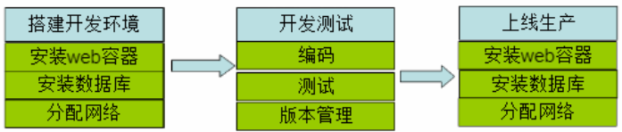
之前，可以发现，每发布一个程序，都要走一遍以上的流程：
1.2 什么是Docker¶
Docker 是一个软件，是一个开源的应用容器引擎，基于 Go 语言开发。Docker 可以让开发者打包他们的应用以及依赖包到一个轻量级、可移植的容器中，然后发布到任何流行的 Linux 机器上，也可以实现虚拟化。容器是完全使用沙箱机制，相互之间不会有任何接口（类似 iPhone 的 app）,更重要的是容器性能开销极低。
Docker的主要目标是“Build，Ship and Run Any App,Anywhere”，也就是通过对应用组件的封装、分发、部署、运行等生命周期的管理，使用户的APP（可以是一个WEB应用或数据库应用等等）及其运行环境能够做到“一次封装，到处运行”。
总之一句话：只需要一次配置好环境，换到别的机子上就可以一键部署好，大大简化了操作 。

为什么选择Docker?
- Docker的镜像提供了除内核外完整的运行时环境，确保了应用运行环境一致性，从而不会再出现“这段代码在我机器上没问题啊”这类问题；——一致的运行环境
- 可以做到秒级、甚至毫秒级的启动时间。大大的节约了开发、测试、部署的时间。——更快速的启动时间
- 避免公用的服务器，资源会容易受到其他用户的影响。——隔离性
- 善于处理集中爆发的服务器使用压力；——弹性伸缩，快速扩展
- 可以很轻易的将在一个平台上运行的应用，迁移到另一个平台上，而不用担心运行环境的变化导致应用无法正常运行的情况。——迁移方便
- 使用Docker可以通过定制应用镜像来实现持续集成、持续交付、部署。——持续交付和部署
Docker应用场景
① Web 应用的自动化打包和发布 ② 自动化测试和持续集成、发布 ③ 在服务型环境中部署和调整数据库或其他的后台应用
使用Docker可以实现开发人员的开发环境、测试人员的测试环境、运维人员的生产环境的一致性。

Docker借鉴了标准集装箱的概念。标准集装箱将货物运往世界各地，Docker将这个模型运用到自己的设计 中，唯一不同的是：集装箱运输货物，而Docker运输软件。
1.3 容器与虚拟机比较¶
下面的图片比较了 Docker 和传统虚拟化方式的不同之处，可见容器是在操作系统层面上实现虚拟化，直接复用本地主机的操作系统，而传统方式则是在硬件层面实现。
传统虚拟机

传统虚拟机技术基于安装在主操作系统上的虚拟机管理系统（如：VirtualBox和VMWare等），创建虚拟机（虚拟出各种硬件），在虚拟机上安装从操作系统，在从操作系统中安装部署各种应用。
Docker

Docker容器是在操作系统层面上实现虚拟化，直接复用本地主机的操作系统，而传统虚拟机则是在硬件层面实现虚拟化。与传统的虚拟机相比，Docker优势体现为启动速度快、占用体积小。
使用上的区别
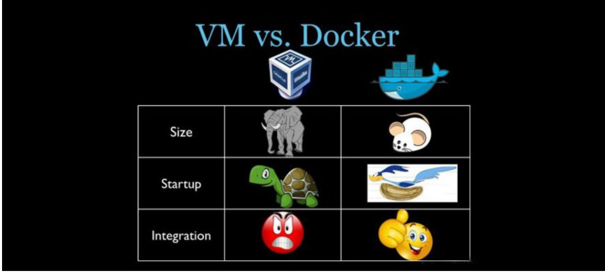
简单来说： 容器和虚拟机具有相似的资源隔离和分配优势，但功能有所不同，因为容器虚拟化的是操作系统，而不是硬件，因此容器更容易移植，效率也更高。
1.4 Docker 组件¶
1.4.1 Docker组成部分¶
Docker是一个客户端-服务器（C/S）架构程序。Docker客户端只需要向Docker服务器或者守护进程发出请求，服务器或者守护进程将完成所有工作并返回结果。Docker提供了一个命令行工具Docker以及一整套RESTful API。你可以在同一台宿主机上运行Docker守护进程和客户端，也可以从本地的Docker客户端连接到运行在另一台宿主机上的远程Docker守护进程。


1.4.2 Docker镜像与容器¶
镜像：Docker镜像（Image），就相当于是一个root文件系统。
Docker镜像是一个特殊的文件系统，除了提供容器运行时所需的程序、库、资源、配置等文件外，还包含了一些为运行时准备的一些配置参数（如匿名卷、环境变量、用户等）。 镜像不包含任何动态数据，其内容在构建之后也不会被改变。
容器：类似linux系统环境，运行和隔离应用。是镜像运行时的实体
镜像（Image）和容器（Container）的关系，就像是面向对象程序设计中的类和实例一样，镜像是静态的定义，容器是镜像运行时的实体。容器可以被创建、启动、停止、删除、暂停等 。
仓库：集中存放镜像文件的地方。
镜像构建完成后，可以很容易的在当前宿主上运行，但是， 如果需要在其它服务器上使用这个镜像，我们就需要一个集中存储、分发镜像的地方，比如后面我们要学的，Docker Registry就是这样的服务。
1.4.3 Registry（注册中心）¶
Docker用Registry来保存用户构建的镜像。Registry分为公共和私有两种。Docker公司运营公共的Registry叫做Docker Hub。用户可以在Docker Hub注册账号，分享并保存自己的镜像（说明：在Docker Hub下载镜像巨慢，可以自己构建私有的Registry）。
2 Docker安装与启动¶
2.1 安装Docker¶
Docker官方建议在Ubuntu中安装，因为Docker是基于Ubuntu发布的，而且一般Docker出现的问题Ubuntu是最先更新或者打补丁的。在很多版本的CentOS中是不支持更新最新的一些补丁包的。
由于我们学习的环境都使用的是CentOS，因此这里我们将Docker安装到CentOS上。注意：这里建议安装在CentOS7.x以上的版本，在CentOS6.x的版本中，安装前需要安装其他很多的环境而且Docker很多补丁不支持更新。
资料已经准备了安装好的镜像，直接挂载即可。
账号：root
密码：123456
常见错误：
① 如果报如下错误：退出360
② 如果提示移动还是复制
选择 移动
查看ip地址
ip addr

请直接挂载课程配套的Centos7.x镜像
（1）yum 包更新到最新(已安装，大家不需要安装)
sudo yum update
（2）安装需要的软件包， yum-util 提供yum-config-manager功能，另外两个是devicemapper驱动依赖的(已安装，大家不需要安装)
sudo yum install -y yum-utils device-mapper-persistent-data lvm2

（3）设置yum源为阿里云(已安装，大家不需要安装)
sudo yum-config-manager --add-repo http://mirrors.aliyun.com/docker-ce/linux/centos/docker-ce.repo
（4）安装docker(已安装，大家不需要安装)
sudo yum install docker-ce
（5）安装后查看docker版本
docker -v

2.2 设置ustc的镜像¶
ustc是老牌的linux镜像服务提供者了，还在遥远的ubuntu 5.04版本的时候就在用。ustc的docker镜像加速器速度很快。ustc docker mirror的优势之一就是不需要注册，是真正的公共服务。
https://lug.ustc.edu.cn/wiki/mirrors/help/docker
编辑该文件：(已设置，大家不需要设置)
vi /etc/docker/daemon.json
在该文件中输入如下内容：
{
"registry-mirrors": ["https://docker.mirrors.ustc.edu.cn"]
}
退出保存
先点下esc 然后在 :wq
2.3 Docker的启动与停止¶
systemctl命令是系统服务管理器指令
启动docker：
systemctl start docker
停止docker：
systemctl stop docker
重启docker：
systemctl restart docker

查看docker状态：
systemctl status docker

开机启动：
systemctl enable docker
查看docker概要信息
docker info
查看docker帮助文档
docker --help


指令介绍：
cp:本地文件系统(OS操作系统|宿主机)和容器之间进行文件或者文件夹拷贝
exec:登录一个容器，使用命令行操作正在运行的容器。
images:镜像的集合查询。
ps:容器列表
pull:下载镜像
restart:重启一个或多个容器
rm:删除一个或多个容器
rmi:删除一个或多个镜像
run:创建一个容器，并运行起来
save:导出镜像到一个文件(tar)中
search:搜索镜像（从Docker Hub）
start：启动一个或多个已经停止的容器
restart:重启动一个或多个已经停止的容器
stop：停止一个或多个正在运行的容器
3 常用命令¶
镜像：Docker镜像是由文件系统叠加而成（是一种文件的存储形式）；是docker中的核心概念，可以认为镜像就是对某些运行环境或者软件打的包，用户可以从docker仓库中下载基础镜像到本地，比如开发人员可以从docker仓库拉取（下载）一个只包含centos7系统的基础镜像，然后在这个镜像中安装jdk、mysql、Tomcat和自己开发的应用，最后将这些环境打成一个新的镜像。开发人员将这个新的镜像提交给测试人员进行测试，测试人员只需要在测试环境下运行这个镜像就可以了，这样就可以保证开发人员的环境和测试人员的环境完全一致。
3.1 镜像相关命令¶
3.1.1 查看镜像¶
# 查看镜像可以使用如下命令：
docker images

REPOSITORY：镜像名称
TAG：镜像标签
IMAGE ID：镜像ID
CREATED：镜像的创建日期（不是获取该镜像的日期）
SIZE：镜像大小
这些镜像都是存储在Docker的 /var/lib/docker 目录下
3.1.2 搜索镜像¶
如果你需要从网络中查找需要的镜像，可以通过以下命令搜索
# 如果你需要从网络中查找需要的镜像，可以通过以下命令搜索
docker search 镜像名称
# 比如 docker search nginx
例如 下载一个 nginx 镜像
NAME：仓库名称
DESCRIPTION：镜像描述
STARS：用户评价，反应一个镜像的受欢迎程度
OFFICIAL：是否官方
AUTOMATED：自动构建，表示该镜像由Docker Hub自动构建流程创建的
3.1.3 拉取镜像¶
拉取镜像就是从中央仓库中下载镜像到本地
# 拉取镜像就是从Docker仓库下载镜像到本地，镜像名称格式为 名称:版本号，如果版本号不指定则是最新的版本
命令如下：
docker pull 镜像名称
# 例如，我要下载centos7镜像
docker pull centos:7
下载一个 nginx 的镜像 , 需要注意：如果下载的时候，不指定版本，会下载最新的版本

刚刚下载的镜像通过 docker images 就可以查看

3.1.4 删除镜像¶
按镜像ID删除镜像
# 可以按照镜像id删除镜像，命令如下：
docker rmi 镜像ID
删除 nginx 镜像

刚刚的 nginx 就已经被删除了
删除所有镜像
docker rmi `docker images -q`
3.15 从Docker Hub拉取¶
Docker镜像首页，包括官方镜像和其它公开镜像。Docker Hub上最受欢迎的10大镜像（通过Docker registry API获取不了镜像被pull的个数，只能通过镜像的stars数量，来衡量镜像的流行度。毫无疑问，拥有最高stars数量的库都是官方库）。
https://hub.docker.com/search?image_filter=official&type=image
国情的原因，国内下载 Docker HUB 官方的相关镜像比较慢，可以使用国内（docker.io）的一些镜像加速器，镜像保持和官方一致，关键是速度块，推荐使用。
3.2 容器相关命令¶
容器，也是docker中的核心概念，镜像是创建容器的软件 , 容器是由镜像运行产生的运行实例。镜像和容器的关系，就如同Java语言中类和对象的关系。
如果需要通俗的描述容器的话，我觉得容器就是一个存放东西的地方，就像书包可以装各种文具、衣柜可以放各种衣服、鞋架可以放各种鞋子一样。我们现在所说的容器存放的东西可能更偏向于应用比如网站、程序甚至是系统环境。

3.2.1 查看容器¶
查看正在运行的容器
docker ps

查看所有容器
docker ps –a
查看最后一次运行的容器
docker ps –l
查看停止的容器
docker ps -f status=exited
3.2.2 创建与启动容器¶
① 什么是宿主机？
就是主机，这个概念是相对于子机而言的，比如你安装有虚拟机的话，那么相对于虚拟机而言，你正在使用的计算机就是宿主机，虚拟机是安装在主机上的，必须在主机上才能运行，主机就是一个“宿主”。
② 创建容器常用的参数说明：
创建容器命令：docker run
docker run -it --name=容器名称 镜像名称:标签 /bin/bash
-i：表示运行容器
-t：表示容器启动后会进入其命令行。加入这两个参数后，容器创建就能登录进去。即分配一个伪终端。
--name :为创建的容器命名。
-v：表示目录映射关系（前者是宿主机目录，后者是映射到宿主机上的目录），可以使用多个－v做多个目录或文件映射。注意：最好做目录映射，在宿主机上做修改，然后共享到容器上。
-d：在run后面加上-d参数,则会创建一个守护式容器在后台运行（这样创建容器后不会自动登录容器，如果只加-i -t两个参数，创建后就会自动进去容器）。
-p：表示端口映射，前者是宿主机端口，后者是容器内的映射端口。可以使用多个-p做多个端口映射
（1）交互式方式创建容器
以交互式方式创建并启动容器，启动完成后，直接进入当前容器。使用exit命令退出容器。需要注意的是以此种方式启动容器，如果退出容器，则容器会进入停止状态。可以理解成交互式容器 是前台容器。
docker run -it --name=容器名称 镜像名称:标签 /bin/bash
# 比如：docker run -it --name=mycentos centos:7 /bin/bash
# docker run:表示创建容器
# -it：表示运行容器并进入它的命令行
# --name=mycentos：给当前的容器命名
# centos:7：使用该镜像创建
# /bin/bash：放在镜像名后的是命令，这里我们希望有个交互式 Shell，因此用的是 /bin/bash
创建容器

创建好容器，并且已经进入到容器内部了，可以直接观察前面中括号里面的内容发现，跟创建容器之前不一样了，
并且 通过 dir 命令，会发现，其实容器内部也是一个 centos , 我们可以把每个容器都看成一个小电脑或者服务器

重新开一个新的会话，查看刚刚创建的容器是否已经有了。

# 查看正在运行的容器
docker ps

退出当前容器
exit

退出之后，容器也退出了，没有删除

(2) 创建后台容器
docker run -id --name=mycentos2 centos:7
查看 docker 容器已经运行

（3）守护式方式创建容器：
创建一个守护式容器；如果对于一个需要长期运行的容器来说，我们可以创建一个守护式容器。命令如下（容器名称不能重复）：守护容器可以理解成在后台运行的容器
# 守护式容器和交互式容器的创建方式区别：
# ① -it 换成 -di
# ② 去掉后面的 /bin/bash
docker run -di --name=容器名称 镜像名称:标签
# 比如：docker run -di --name=mycentos10 centos:7

通过 docker ps 查看容器已经是运行状态
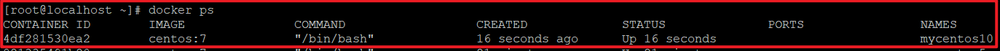
进入守护式容器方式：
docker exec -it 容器名称 (或者容器ID) /bin/bash
# 比如 docker exec -it mycentos10 /bin/bash
已经进入到容器内部了，如果现在退出，然后查看容器是否还在后台运行
3.2.3 停止与启动容器¶
先通过 docker ps 查看正在运行的容器
停止容器：
docker stop 容器名称（或者容器ID）
例如： docker stop mycentos2
创建完容器之后，停止容器

查看容器是否已经停止
启动容器：
docker start 容器名称（或者容器ID）
例如： docker start mycentos2

查看容器是否已经启动

3.2.4 文件拷贝¶
我们需要在容器内安装一个软件，软件首先需要有安装包，我们就需要把安装包拷贝到容器内。我们通常的操作是先把文件上传到宿主机，然后我们在将文件从宿主机拷贝到容器内的某个目录下面进行安装。
将linux宿主机中的文件拷贝到容器内可以使用命令：

如果我们需要将文件拷贝到容器内可以使用cp命令
docker cp 需要拷贝的文件或目录 容器名称:容器目录
例如： docker cp anaconda-ks.cfg mycentos2:/usr/local/
拷贝一个文件到 mycentos2 的 /urs/local/ 文件下面 ，拷贝完成之后，删除文件，然后在mycentos2拷贝过来

登录容器查看拷贝之后的结果
docker exec -it mycentos2 /bin/bash
docker exec：表示登陆正在运行的容器
-it：进入命令行
mycentos2：进入到该容器

也可以将文件从容器内拷贝出来
docker cp 容器名称:容器目录 需要拷贝的文件或目录
例如：docker cp mycentos2:/usr/local/anaconda-ks.cfg ./
我们先通过 exit 退出容器，然后在把文件从容器拷贝到当前目录

3.2.5 目录挂载¶
我们可以在创建容器的时候，将宿主机的目录与容器内的目录进行映射，这样我们就可以通过修改宿主机某个目录的文件从而去影响容器。 创建容器 添加-v参数 后边为 宿主机目录:容器目录，例如：
# 创建并启动容器mycentos3,并挂载linux中的/usr/local/myhtml目录到容器的/usr/local/myhtml；也就是在linux中的/usr/local/myhtml中操作相当于对容器相应目录操作
docker run -di --name=容器的名字 -v /usr/local/myhtml:/usr/local/myhtml centos:7
比如：docker run -di --name=mycentos3 -v /usr/local/myhtml:/usr/local/myhtml centos:7
通过 docker ps 查看正在运行的容器，在创建容器并且进行目录挂载，然后在通过 docker ps 查看刚刚创建的容器是否已经创建

进入到 myhtml 目录 ，通过dir查看是否有文件，通过vi test2 （或者touch test2创建文件） ，创建一个文件，进入test2文件，随便输入一些数据
进入目录随便输入一些东西 ， 退出保存
登录容器，查看刚刚输入的内容
# 进入容器
docker exec -it mycentos11 /bin/bash
# 进入容器中查看目录
cd /usr/local/myhtml
# 查看myhtml目录中，是否有对应文件test2.txt
ls
cat test2
# 退出容器
exit

如果你共享的是多级的目录，可能会出现权限不足的提示。
这是因为CentOS7中的安全模块selinux把权限禁掉了，我们需要添加参数 --privileged=true 来解决挂载的目录没有权限的问题
3.2.6 查看容器IP地址¶
我们可以通过以下命令查看容器运行的各种数据
docker inspect 容器名称（容器ID）
# 在linux宿主机下查看 mycentos3 的ip
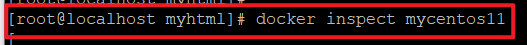
IP 地址
通过inspect 可以查看的信息太多，如果想单纯有针对性的查看某个信息，也可以直接执行下面的命令直接输出IP地址
docker inspect --format='{{.NetworkSettings.IPAddress}}' 容器名称（容器ID）
# 例如：docker inspect --format='{{.NetworkSettings.IPAddress}}' mycentos11
3.2.7 删除容器¶
删除指定的容器：
docker rm 容器名称（容器ID）
例如：docker rm mycentos11
删除容器的时候，如果容器在运行，会报错，必须先停止容器
# 查看正在运行的容器
docker ps
# 删除正在运行的容器
docker rm mycentos11
# 停止容器
docker stop mycentos11
# 查看所有的容器，看看是否有mycentos11
docker ps -a
# 删除centos11容器
docker rm mycentos11
# 删除完成之后，在查看mycentos11容器是否还存在
docker ps -a

4 应用部署¶
4.1 MySQL部署¶

（1）拉取mysql镜像
docker pull mysql:5.7
搜索 mysql 镜像
拉取 mysql 镜像
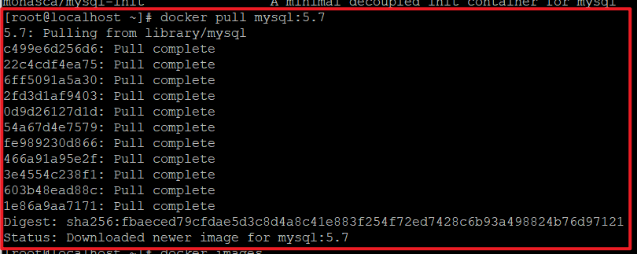
通过 docker images 查看刚刚下载的mysql镜像是否下载成功
（2）创建容器
# 创建mysql5.7容器
# docker run -di --name=容器名字 -p 宿主机端口:容器端口 -e MYSQL_ROOT_PASSWORD=mysql密码 容器名称
docker run -di --name=mysql5.7 -p 33306:3306 -e MYSQL_ROOT_PASSWORD=123456 mysql:5.7
-p 代表端口映射，格式为 宿主机映射端口:容器运行端口
-e 代表添加环境变量 MYSQL_ROOT_PASSWORD 是 roo t用户的远程登陆密码
创建交互式容器 ，并且通过 docker ps 查看是否映射成功，
如果报如下错误：
解决方案：
① 先通过 docker ps -a 查询下正在运行的容器
② 找到容器之后，需要把运行的容器删除才能继续创建
③ 在删除容器的时候需要注意：正在运行的容器不能直接删除，必须先通过 stop 停止容器，然后在通过 rm 删除容器
（3）远程登录 mysql
连接宿主机的 IP ,指定端口为 33306
使用 windows上面的小海豚进行连接
navicat 测试连接

创建数据库
创建数据库里面的表
DROP TABLE IF EXISTS `user`;
CREATE TABLE `user` (
`id` int(11) NOT NULL AUTO_INCREMENT,
`age` int(11) NULL DEFAULT NULL,
`username` varchar(20) CHARACTER SET utf8 COLLATE utf8_general_ci NULL DEFAULT NULL,
`password` varchar(50) CHARACTER SET utf8 COLLATE utf8_general_ci NULL DEFAULT NULL,
`email` varchar(50) CHARACTER SET utf8 COLLATE utf8_general_ci NULL DEFAULT NULL,
`sex` varchar(20) CHARACTER SET utf8 COLLATE utf8_general_ci NULL DEFAULT NULL,
PRIMARY KEY (`id`) USING BTREE
) ENGINE = InnoDB AUTO_INCREMENT = 3 CHARACTER SET = utf8 COLLATE = utf8_general_ci ROW_FORMAT = Dynamic;
INSERT INTO `user` VALUES (1, 3, 'maxiaoma', '123', 'moweiqi@163.com', '1');
INSERT INTO `user` VALUES (2, 20, 'Jession', '123', 'ljack@qq.com', '0');
登录 docker 容器，查看数据库的表是否创建
docker exec -it mysql5.7 /bin/bash
mysql -u root -p
# 密码：123456
show databases;
进入到 数据库 ， 查询 user 表
4.2 tomcat部署¶
（1）拉取镜像
docker pull tomcat:7-jre7

（2）创建容器
创建容器 -p表示地址映射 -v 表示目录挂载
# 创建tomcat容器;并挂载了webapps目录
docker run -di --name=mytomcat -p 9000:8080 -v /usr/local/webapps:/usr/local/tomcat/webapps tomcat:7-jre7
创建完成容器之后，在通过 docker ps 查看容器是否正在运行
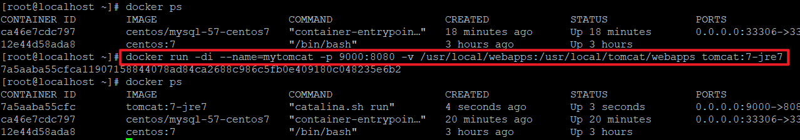
本地的war包 ，上传到docker容器里面

ls 查看 dubbo的war 是否已经上传到docker容器，上传成功之后，在通过mv 命令 把dubbo移动到 /usr/local/webapps 目录下面，然后请求 http://192.168.211.144:9000/dubbo-admin-2.6.0/

请求地址：http://192.168.211.144:9000/dubbo-admin-2.6.0/ 说明咱的tomcat已经部署成功
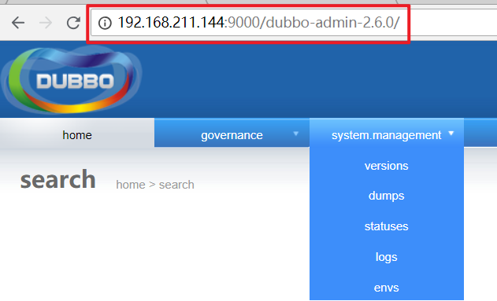
4.3 Nginx部署¶
（1）拉取镜像
docker pull nginx
（2）创建Nginx容器
docker run -di --name=mynginx -p 80:80 nginx
安装完成之后，请求nginx页面

4.4 Redis部署¶
（1）拉取镜像
docker pull redis
（2）创建容器
docker run -di --name=myredis -p 6379:6379 redis
创建 redis 容器

远程连接redis 容器 -h ：表示远程连接

5 迁移与备份¶
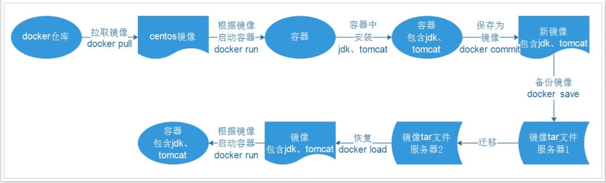
其中涉及到的命令有：
- docker commit 将容器保存为镜像
- docker save 将镜像备份为tar文件
- docker load 根据tar文件恢复为镜像
5.1 容器保存为镜像¶
我们可以通过以下命令将容器保存为镜像
# 保存nginx容器为镜像
docker commit 容器名称 镜像名称
例如：docker commit mynginx mynginx_i
使用 docker ps -a 查看所有的容器

看到有一个mynginx 容器 , 将容器保存为一个镜像：
查看镜像是否保存成功
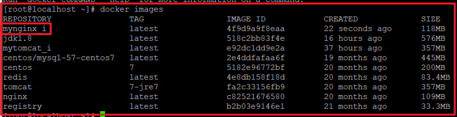
使用刚刚保存的镜像 ，重新创建一个容器
创建完成之后 ， 直接 通过 docker ps查看正在运行的容器，可以找到刚刚创建的容器mynginx2
5.2 镜像备份¶
我们可以通过以下命令将镜像保存为tar 文件
# 命令形式：docker save –o tar文件名 镜像名
# 保存镜像为文件 -o：表示output 输出的意思
docker save -o mynginx.tar mynginx_i
通过 save 保存成文件之后，在通过 ls 命令进行查看当前目录是否有 tar文件
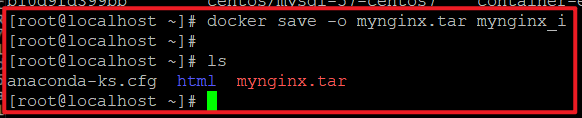
5.3 镜像恢复与迁移¶
首先我们先删除掉mynginx_img镜像 然后执行此命令进行恢复
# 命令形式：docker load -i tar文件名
docker load -i mynginx.tar
-i 表示input输入的文件
执行后再次查看镜像，可以看到镜像已经恢复
我们需要直接恢复刚刚的 tar 文件 ，就需要先删除 mynginx_i 镜像，才能恢复, 直接删除 mynginx_i 镜像 ，发现会报错，因为当前镜像的容器正在运行，需要先停止容器，删除容器 ， 在删除镜像

删除完成之后 ， 在查看镜像是否还存在 ，发现mynginx_i 镜像已经被删除
恢复镜像
6 Dockerfile¶
6.1 什么是Dockerfile¶
前面的课程中已经知道了，要获得镜像，可以从Docker仓库中进行下载。那如果我们想自己开发一个镜像，那该如何做呢？答案是：Dockerfile Dockerfile其实就是一个文本文件，由一系列命令和参数构成，Docker可以读取Dockerfile文件并根据Dockerfile文件的描述来构建镜像。
1、对于开发人员：可以为开发团队提供一个完全一致的开发环境； 2、对于测试人员：可以直接拿开发时所构建的镜像或者通过Dockerfile文件构建一个新的镜像开始工作了； 3、对于运维人员：在部署时，可以实现应用的无缝移植。
6.2 常用命令¶
| 命令 | 作用 |
|---|---|
| FROM image_name:tag | 定义了使用哪个基础镜像启动构建流程 |
| MAINTAINER user_name | 声明镜像的创建者 |
| ENV key value | 设置环境变量 (可以写多条) |
| RUN command | 是Dockerfile的核心部分(可以写多条) |
| ADD source_dir/file dest_dir/file | 将宿主机的文件复制到容器内，如果是一个压缩文件，将会在复制后自动解压 |
| COPY source_dir/file dest_dir/file | 和ADD相似，但是如果有压缩文件并不能解压 |
| WORKDIR path_dir | 设置工作目录 |
6.3 使用脚本创建镜像¶
步骤：
（1）创建目录
mkdir –p /usr/local/dockerjdk8
（2）下载jdk-8u144-linux-x64.tar.gz并上传到服务器（虚拟机）中的/usr/local/dockerjdk8目录
(3) 移动目录刚刚上传的 jdk 到 /usr/local/dockerjdk8 目录下面
mv jdk-8u144-linux-x64.tar.gz /usr/local/dockerjdk8
（3）创建文件Dockerfile vi Dockerfile
# Dockerfile 名字不要改
vi Dockerfile

设置环境变量 ，设置完成之后 先按下esc , 然后在 :wq 保存退出
#依赖镜像名称和ID
FROM centos:7
#指定镜像创建者信息
MAINTAINER maweiqi
#切换工作目录
WORKDIR /usr
RUN mkdir /usr/local/java
#ADD 是相对路径jar,把java添加到容器中
ADD jdk-8u144-linux-x64.tar.gz /usr/local/java/
#配置java环境变量
ENV JAVA_HOME /usr/local/java/jdk1.8.0_144
ENV JRE_HOME $JAVA_HOME/jre
ENV CLASSPATH $JAVA_HOME/lib/dt.jar:$JAVA_HOME/lib/tools.jar:$JRE_HOME/lib:$CLASSPATH
ENV PATH $JAVA_HOME/bin:$PATH
（4）执行命令构建镜像
docker build -t='jdk1.8' .
注意后边的空格和点，不要省略
（5）查看镜像是否建立完成
docker images
7 Docker私有仓库¶
Docker官方的Docker hub（https://hub.docker.com）是一个用于管理公共镜像的仓库，我们可以从上面拉取镜像到本地，也可以把我们自己的镜像推送上去。但是，有时候我们的服务器无法访问互联网，或者你不希望将自己的镜像放到公网当中，那么我们就需要搭建自己的私有仓库来存储和管理自己的镜像。
7.1 私有仓库搭建与配置¶
（1）拉取私有仓库镜像（此步省略）
docker pull registry
（2）启动私有仓库容器
docker run -di --name=registry -p 5000:5000 registry
创建私有仓库容器
通过 docker ps 查看容器是否创建成功

（3）打开浏览器 输入地址 http://192.168.211.144:5000/v2/_catalog 看到{"repositories":[]} 表示私有仓库搭建成功并且内容为空
（4）修改daemon.json
vi /etc/docker/daemon.json

添加以下内容，保存退出。目的是让容器信任下面的地址
"insecure-registries":["192.168.211.144:5000"]
此步用于让 docker信任私有仓库地址 ，然后退出保存
（5）重启docker 服务
systemctl restart docker
7.2 镜像上传至私有仓库¶
（1）标记此镜像为私有仓库的镜像
# 1、标记镜像为私有仓库的镜像
# docker tag jdk1.8 宿主机IP:5000/jdk1.8
docker tag jdk1.8 192.168.184.141:5000/jdk1.8

（2）再次启动私服容器
# 2、再次启动私有仓库容器
docker start registry
（3）上传标记的镜像
# 3、上传标记的镜像
# docker push 宿主机IP:5000/jdk1.8
docker push 192.168.211.144:5000/jdk1.8

重新刷新，发现jdk 1.8 已经上传到私服

7.3 从私有仓库拉取镜像¶
7.3.1 其它服务器拉取私有仓库镜像¶
大多数情况下，都是某台服务器部署了私有镜像仓库之后；到其它服务器上从私有仓库中拉取镜像，若要拉取私有仓库镜像需要去修改docker的配置文件，设置启动时候的仓库地址。
# 打开配置文件
vi /usr/lib/systemd/system/docker.service
# 在打开的上述文件中按照下面的图，添加如下的内容；注意修改下面内容中的ip地址
--add-registry=192.168.12.135:5000 --insecure-registry=192.168.12.135:5000 \
# 修改完后需要重新加载docker配置文件并重启docker
systemctl daemon-reload
systemctl restart docker
配置完成之后，需要重启 docker 和修改 配置文件
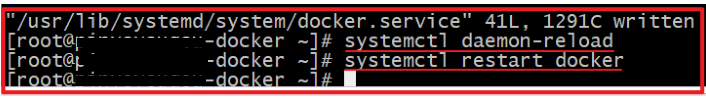
在重启之后；那么则可以去拉取私有仓库中的镜像：
# 执行拉取镜像命令并查看
docker pull jdk1.8
docker images
本文总阅读量次